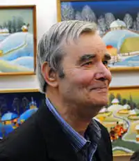
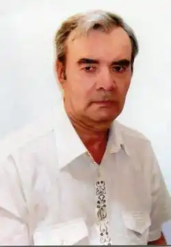
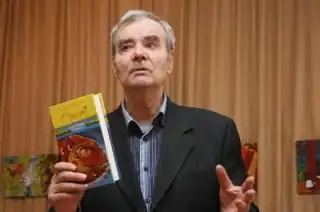

Володимир Рутківський народився 18 квітня 1937 року в с. Хрестителеве Чорнобаївського району Черкаської області.
Навчався в Одеському політехнічному інституті. Друкуватися почав 1959 року. Член Одеської обласної організаціії НСПУ з 1969 року.
У 1960-тих роках працював на Одеському суперфосфатному заводі. В подальшому став працювати журналістом. Закінчив Вищі літературні курси при Літературному інституті ім. Максима Горького. Працював відповідальним секретарем Одеської організації НСПУ. Літературну діяльність Володимир Рутковський розпочинав як поет. У його доробку поетичні збірки "Краплини сонця", "Плоти", "Повітря на двох", "Відчиніть Богданкове вікно", "Рівновага", "Знак глибини", "День живої води". Потім Рутківський став писати переважно твори для дітей та юнацтва: повісті "Аннушка", "Гості на мітлі", "Бухтик з тихого затону", "Канікули у Воронівці", "Намети над річкою", "Слуга баби-Яги"; повість-легенда "Сторожова застава", книга нарисів "Земля майстрів", п'єса— казка "Прибульці"; історичний роман "Сині Води", книга про німецьку окупацію під час Другої світової війни "Потерчата". За радянських часів зазнавав неодноразових звинувачень в українському націоналізмі, його твори відмовлялися друкувати у, єдиному на той час дитячому видавництві України, "Веселка", проте в перекладі російською мовою приймалися до друку у видавництвах Москви. Широке визнання в незалежній Україні Рутківському принесла пригодницька трилогія про джур, видана видавництвом Абабагаламага: "Джури козака Швайки" (2007), "Джури-характерники" (2009), "Джури і підводний човен" (2010). У 2011 році Володимир Рутківський став лауреатом премії "Книга року Бі-Бі-Сі" за двотомний історичний роман "Сині Води". Мешкає і працює Володимир Рутківський в Одесі. 9 лютого 2012 року було оголошено список переможців Шевченківської премії 2012. Володимир Рутківський переміг у номінації "література" за історичну трилогію для дітей "Джури" ("Джури козака Швайки", "Джури-характерники", "Джури і підводний човен", 2007—2010 рр.)